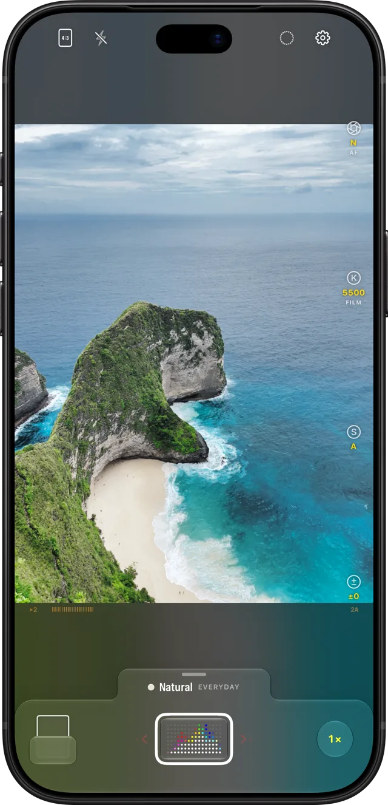
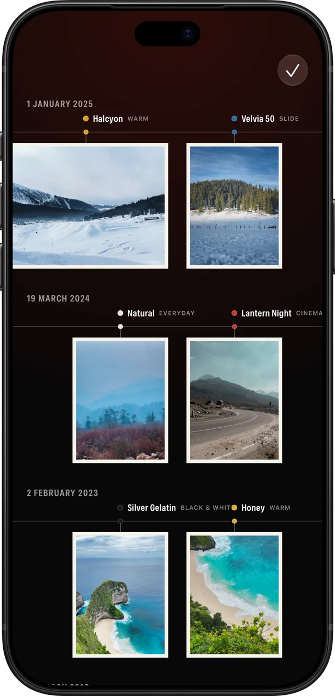
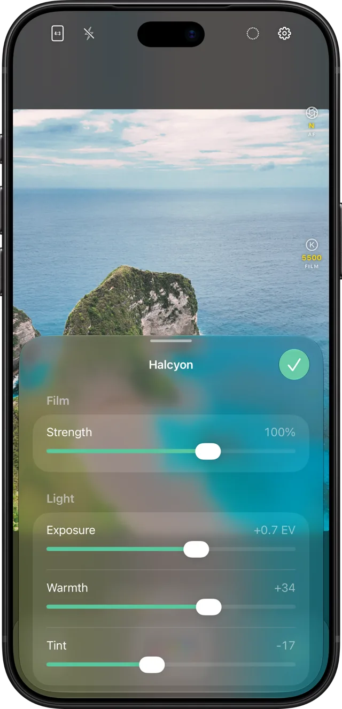
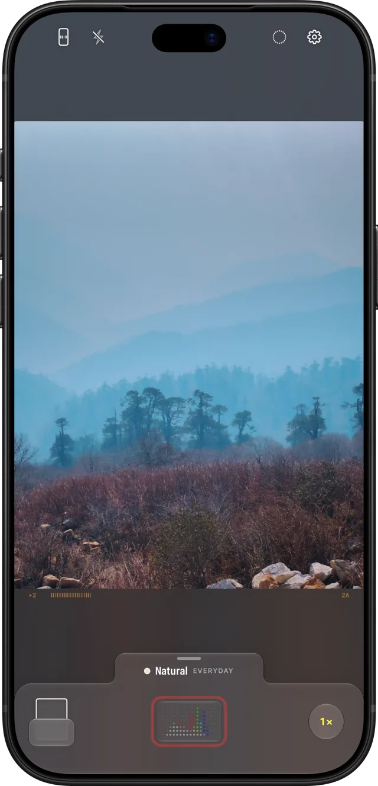
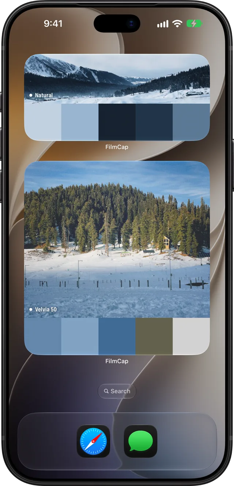
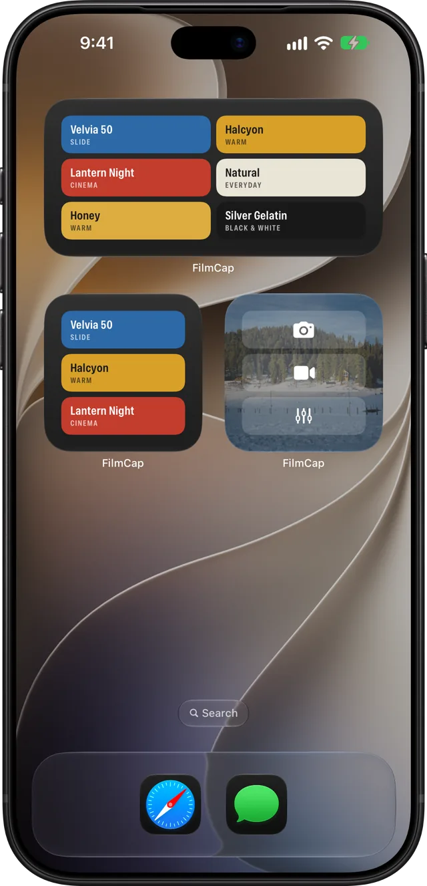
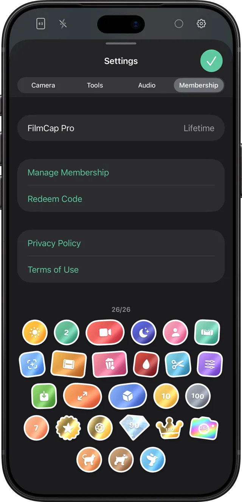

Authentic film, your photo.


Every photo starts from true RAW, with the iPhone's own processing off, and develops through the film you pick. 150 films and more, or make your own.
Join the beta On the App Store soon

Focus, white balance, shutter and exposure sit beside the picture. Tap one and a wheel turns out. The shutter button is a live histogram, so you see the light before you shoot.

Lift one into the developer and reprint it from its negative. Faders for light, tone, colour and texture, masks for the sky or a subject, and lamps you place in the scene.

Open any film and change it while you watch the viewfinder. Keep it as a film of your own.

The same films apply to video, with dolly zoom.


Widgets for your newest print and its five colours, a roll of your prints at random, the films you used lately, and one tap to a photo, a video or the editor.

Stickers to celebrate the moments you cherish: the first cat, a level horizon, a photo after midnight.
The first 30 photos and 5 videos come with every film. FilmCap Pro opens every film and tool: monthly, yearly, or once for life. Shared with your family.
Photos and videos are developed on your iPhone and saved to your Photos library. FilmCap sends none of them anywhere. Privacy Policy